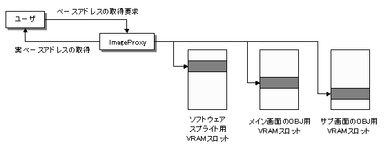

画像プロクシ概要
概念図

説明
Ｇ2Dライブラリでは、同じＡＰＩを使用して、メイン画面のOBJでの表示、サブ画面のOBJでの表示、及びソフトウェアスプライトでの表示を動的に切り替える事が出来ます。しかし実際には、これらの異なる表示先に対して描画を行う為には、それぞれ異なるVRAMスロットにそれ専用にキャラクタデータを格納しておく必要があります。Ｇ2Dライブラリでは、表示先が切り替わった場合に、キャラクタデータの格納先の切り替えを意識しなくてもよいように、ImageProxy(画像プロクシ)と呼ばれる仕組みを持っています。
ImageProxyは、ユーザからキャラクタデータのベースアドレスの取得が要求されると、そのキャラクタが何によって表示されようとしているかを判断し、適切なVRAMスロットに格納されているキャラクタのベースアドレスを返します。
本構造は上位ユーティリティ層のレンダラモジュールに VRAM情報を設定する際などに使用されています。
参照
なし
履歴
2004/12/06 初版